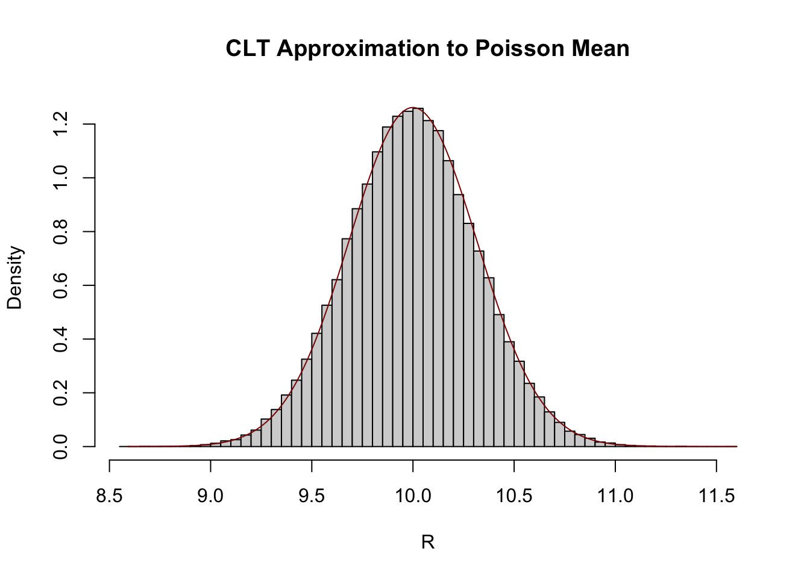

\[\newcommand{\P}{\mathbb{P}}\newcommand{\E}{\mathbb{E}} \newcommand{\V}{\mathbb{V}} \newcommand{\bX}{\mathbf{X}} \newcommand{\bA}{\mathbf{A}} \newcommand{\bI}{\mathbf{I}} \newcommand{\C}{\mathbb{C}} \newcommand{\M}{\mathbb{M}} \newcommand{\R}{\mathbb{R}} \newcommand{\bZ}{\mathbf{Z}}\] The original exam packet can be found here.
Question 1
Let \(X\) be a Geometric random variable with PMF \(\P(X = x) = p(1-p)^{x-1}\). What is the MGF of \(X\), \(\M_X(t)\)?
Hint: You may use the fact that \[\sum_{k=1}^{\infty} q^k = q/(1-q)\] for any\(q < 1\). Specifically, \(q\)does not have to be the success probability.
Question History
This is essentially Question 1 from the Week 12 In-Class Mini-Quiz, with the binomial distribution replaced by the geometric.
Solution
We recall the definition of the MGF:
\[\M_X(t) = \E[e^{tX}]\]
Substituting the geometric distribution into the law of the unconscious statistician, we get:
Technically, the MGF only is defined for values of the sum where \(e^t(1-p) < 1\), i.e., \(t < -\log(1-p)\), but we don’t concern ourselves with that detail. For everything in this course, it suffices for the CDF to be defined “near” \(t=0\).
Question 2
Let \(Z_1, Z_2, Z_3\) be three IID standard normal random variables. What is the CDF of \(Z_* = \min\{Z_1, Z_2, Z_3\}\)? You may leave your answer in terms of the standard normal CDF, \(\Phi(z)\).
Hint: It may be easier to first derive the complementary CDF of \(Z_*\), \(\P(Z_* > z)\).
Question History
This is Question 2 from the Week 11 In-Class Mini-Quiz, with the \(\max\) replaced by the \(\min\).
Let \(X_1, \dots, X_{100}\) be a set of IID Poisson random variables with mean 10. Using the CLT, what is the approximate distribution of their mean, \(\overline{X}_{100}\)?
Question History
This is a essentially Question 2 from the Week 13 In-Class Mini-Quiz, with the Poisson instead of another distribution.
Solution
From the CLT, we have \[\overline{X}_n\buildrel d \over \approx \mathcal{N}\left(\mu, \frac{\sigma^2}{n}\right).\] Here, we recall that the Poisson has the same mean and variance (both 10), so this becomes
\[\overline{X}_{100}\buildrel d \over \approx\mathcal{N}\left(10, \frac{10}{100}\right) = \mathcal{N}\left(10, 0.1\right)\]
We can compare this approximation with the “true” density estimated by a histogram:
R <-replicate(1e5, { X <-rpois(100, 10)mean(X)})hist(R, breaks=50, probability =TRUE, main="CLT Approximation to Poisson Mean")rr <-seq(min(R), max(R), length.out=401)lines(rr, dnorm(rr, mean=10, sd=sqrt(0.1)), col="red4")

Question 5
Suppose it takes a student 2 minutes on average to answer a question on an exam. Assuming the exam has 40 questions total and that the time taken on each question is IID, use Markov’s inequality to given an upper bound on the probability that it takes more two hours to finish the exam.
Hint: Construct a random variable \(T = \sum_{i=1}^{40} T_i\) for the total amount of time taken and apply Markov’s inequality.
Question History
This is similar to many Markov’s inequality questions asked previously. It is mainly included to set up the next question.
Solution
As suggested by the hint, we let \(T_i\) be the time necessary to answer each question. Hence, \[\E[T] = \E[\sum_{i=1}^{40}T_i] = \sum_{i=1}^{40}\E[T_i] = 40 * 2 = 80.\] Because the amount of time needed to answer a question can’t be negative, each \(T_i \geq 0\) and hence \(T \geq 0\), so we can apply Markov’s inequality:
Suppose it takes a student 2 minutes on average to answer a question on an exam. Furthermore, assume that it never takes the student less than 1 minute or more than 5 minutes to answer a single question. Assuming the exam has 40 questions total and that the time taken on each question is IID, use the Chernoff inequality for means of bounded random variables to give an upper bound on the probability that it takes more than two hours to finish the exam.
Question History
This is a new question, focusing on a variant of the Chernoff inequality suitable for means of bounded random variables.
Solution
We apply the Chernoff bound for means of bounded random variables. Here, we take the variables to fall in the range \([1, 5]\), each with mean 2. For the student to take more than 2 hours to finish the exam, the average time per question must be greater than \(3\) minutes. We put these numbers into the Chernoff bound to get:
\[\P(\overline{T}_{40} > E[\overline{T}_{40}] + 1) \leq e^{-2n t^2/(b-a)^2} = e^{-80 * 1^2/4^2} = e^{-5} \approx 0.67\%\] Here we see that by taking advantage of the mean structure of \(T\) (or equivalently, the IID sum structure), we are able to get a significantly tighter bound on the probability of the student not being able to finish the exam in the permitted 2 hour time.
As an aside, this is why it’s important to efficiently use the time made available for an exam and to limit the amount of time you spend on any one question. Limiting the time spent on a single question limits any “long tail” of unproductive time.
Question 7
Let \(X\) be a random variable with a \(\mathcal{N}(5, 1)\) distribution. Using the Delta Method, what is the approximate distribution of \(1/X\)?
Question History
This is essentially Question 3 from the Week 13 In-Class Mini-Quiz, with a simpler transformation (inverse instead of odds).
Solution
Recall that the delta method proceeds by Taylor expanding the transform around the mean of the distribution, so we have:
\[\V[1/X] \approx \V\left[\frac{1}{5} - \frac{(X-5)}{25}\right] = \frac{1}{25^2}\V[X-5] = \frac{1}{625}\V[X] = \frac{1}{625}\] We can compare this to the result of a simulation, but the result will only be somewhat accurate due to the limitations of a one term Taylor series.1
n <-1e7X <-rnorm(n, 5, 1)mean(1/X)
[1] 0.2092466
var(1/X)
[1] 0.002600221
so the Delta method mean is pretty close (off by about 5%) while the variance is off by about half.
Question 8
The \(\text{BetaBinomial}(n, \alpha, \beta)\) distribution is the sum of \(n\) independent Bernoulli random variables, with probabilities, each sampled IID from a \(\text{Beta}(\alpha, \beta)\) distribution. What is the expected value of \(X\sim\text{BetaBinomial}(10, 2, 5)\)?
Question History
This is a new question designed to test i) your use of the beta distribution and ii) your use of the law of total expectation (in the form known as “Adam’s Law” in the textbook).
Solution
From the construction of the beta-binomial, we have
R <-replicate(1e6, { p <-rbeta(10, 2, 5)sum(rbinom(10, size=1, prob=p))})mean(R)
[1] 2.856043
Question 9
Suppose \(X\) has MGF \(\M_X(t) = (1-3t)^{-5}\). What is the expected value of \(X\)?
Question History
This is a new question, which can be answered in two ways, each of which uses an important topic from this unit of the course:
Use of important named distributions, here the Gamma distribution; or
Direct use of Moment Generating Functions to compute moments
Solution
As noted above, we can answer this in two ways:
We recognize \(\M_X(t) = (1-3t)^{-5}\) as the MGF of a \(\text{Gamma}(5, 3)\) distribution, so \(\E[X] = 5 * 3 = 15\).
We can use the MGF to compute a moment directly: specifically, we note that \[\begin{align*}
\M_X'(t) &= \frac{\text{d}}{\text{d}t}(1-3t)^{-5} \\
&= (-5)(1-3t)^{-6} * (-3) \\
&= \frac{15}{(1-3t)^6}
\end{align*}\] From the properties of MGFs, we know that
As expected, both approaches give the same value, so it’s a matter of personal taste which is to be preferred.
Question 10
Let \(U_1, \dots, U_{50}\) be IID \(\text{ContinuousUniform}([0, 1])\) random variables. Using the CLT, approximate the probability that \(\P(\sum_{i=1}^{50} U_i > 27.5)\).
Question History
This is essentially Question BH 10.7.22(b) from the textbook, with an additional hint suggesting use of the CLT.
Solution
Per the hint, we note that \(\E[U_i] = 0.5\) and \(\V[U_i] = \frac{1}{12}\), so
\[\overline{U}_{50} \buildrel d \over \approx \mathcal{N}\left(\frac{1}{2}, \frac{1}{600}\right)\]
R <-replicate(5e5, { U <-runif(50)sum(U)})mean(R >27.5)
[1] 0.11056
Question 11
Let \(X_1, X_2, \dots\) be IID random variables with mean \(\mu\) and variance \(\sigma^2\). Find a value of \(n\) (an integer) such that the sample mean \(\overline{X}_n\) is within 2 standard deviations of the mean with probability 99% or greater.
Hint: Chebyshev
Question History
This is Question BH 10.7.2 from the textbook, basically unchanged.
If we want the right hand side to be 99% (so that we are within the bounds), we clearly have \(k = 10\) and we need \(k/\sqrt{n} = 2\), giving a minimum sample size of \[\frac{10}{\sqrt{n}} = 2 \implies n = 25\]
This is remarkable! For any (finite-variance) random variable, the sample mean of 25 IID realizations will be within two standard deviations of the mean with 99% probability (or higher).
Question 12
A fair 6-sided die is rolled once. What is the expected number of additional rolls to needed to obtain a value at least as large as the initial roll?
Question History
This is Question BH 9.9.13 from the textbook, basically unchanged.
Solution
This would be easier if we knew the value of the first role, so let’s condition on it, using the law of total expectation.
Let \(N\) be the number of additional rolls needed and let \(R\) be the value of the first roll. Clearly, if the first roll is \(r\), the probability of getting a follow-up that is greater than or equal to \(r\) is \(\frac{6-r+1}{6} = \frac{7-r}{6}\) and \(N \sim \text{Geom}(\frac{7-r}{6})\). This implies that, conditional on \(R = r\), we need \(\E[N | R = r] = \frac{1}{\frac{7-r}{6}} = \frac{6}{7-r}\) additional rolls.
Let \(X \sim \text{Beta}(3, 5)\). What is the expected value of \(1 - X\)?
Question History
This is a simplified version of Question BH 8.9.28 from the textbook, here asking only for the mean instead of the full distribution. Because the question only asks for the mean, you don’t actually need to work through the reflection property of the beta distribution to solve it.
Solution
We first recall that \[B \sim \text{Beta}(\alpha, \beta) \implies \E[B] = \frac{\alpha}{\alpha+\beta}.\]
so \(1-X \sim \text{Beta}(5, 3)\) with expectation \(\frac{5}{5 + 3} = \frac{5}{8}\) as before.
As always, in simulation:
n <-1e7X <-rbeta(n, 3, 5)mean(1- X)
[1] 0.624984
Question 14
A \(\text{Wiebull}(3, 5)\) distribution has CDF \(F_Y(y) = 1-e^{-(y/3)^5}\). Suppose you have a source of uniform random variables \(U\). Find a transformation of \(U\), \(h(\cdot)\), such that \(h(U) \sim \text{Wiebull}(3, 5)\).
Hint: Apply the probability integral transform.
Question History
This is a new question, designed to test your use of the PIT to create PRNGs for new distributions.
Solution
As noted in the formula sheet, it suffices to compute \(F_Y^{-1}(U)\), so we need to determine \(F_Y^{-1}\).
Asymptotic one-sample Kolmogorov-Smirnov test
data: X
D = 0.0032126, p-value = 0.2533
alternative hypothesis: two-sided
A great match!
Question 15
Let \(X\) be a log-normal random variable such that \(\log X \sim \mathcal{N}(5, 3^2)\). (Note this is the natural “base-\(e\)” logarithm.). What is \(\V[X]\)?
Hint: Recall \((e^{x})^2 = e^{2x}\). You can answer this question using only MGFs.
Question History
This is essentially question 2 from the Week 2 In-Class Mini-Quiz, now asking for the variance instead of the mean.
Solution
Per the hint and our standard practice of standardizing normal distributions, we note that \[\begin{align*}
\V[X] &= \V[e^{5 + 3Z}] \\
&= (e^5)^2 \V[e^{3Z}] \\
&= e^{10} \left(\E[(e^{3Z})^2] - \E[e^{3Z}]^2\right) \\
&= e^{10} \left(\E[(e^{6Z})] - \E[e^{3Z}]^2\right) \\
&= e^{10}(\M_Z(6) - \M_Z(3)^2)
\end{align*}\]
Recalling that \(\M_Z(t) = e^{t^2/2}\), we thus have:
\[\V[X] = e^{10}(e^{(6^2)/2} - (e^{3^2/2})^2) = e^{10}(e^{18} - (e^{4.5})^2) = e^{10}(e^{18} - e^9) = e^{28} - e^{19}\] This feels like the kind of calculation where it is easy to make a mistake, so we can try to verify in simulation:
n <-1e7X <-rlnorm(n, meanlog=5, sdlog=3)var(X)
[1] 1.033224e+12
exp(28) -exp(19)
[1] 1.446079e+12
var(X) / (exp(28) -exp(19))
[1] 0.7145006
Interestingly, this doesn’t look all that close! The issue is that, even with our very large number of samples, the variance of the variance is still too high to get a good convergence. We note that:
sample_variance <-replicate(100, { n <-1e7 X <-rlnorm(n, meanlog=5, sdlog=3)var(X)})## Relative Rangemax(sample_variance) /min(sample_variance)
[1] 118.3976
## Coefficient of Variationsd(sample_variance) /mean(sample_variance)
[1] 2.378431
We see here that the range of “realized” sample variances, even with 10 million samples, is multiple orders of magnitude and that the standard deviation of the variances is larger than the quantity we are trying to estimate!
Specifically, it can be shown that the variance of the sample variance is roughly proportional to \(\E[(X - \mu)^4]/n\). For the lognormal, \(\E[(X-\mu)^4]\) will be proportional to \(\M_Z(24) = e^{288}\), so even with ten billion samples, the standard deviation of the sample variance is still on the order of \(e^{144}/10^5 \approx e^{132.5}\), which is much larger than the actual quantity we are trying to estimate here.
While the lognormal distribution is not as heavy-tailed as the Cauchy, it is still rather heavy-tailed and highly skewed. This makes estimating its parameters via Monte Carlo quite difficult.
When using Monte Carlo approaches, it is important to assess the uncertainty in your estimates using techniques such as these. If that uncertainty is insurmountably high, you might have to fall back on mathematical analysis of the form we performed above. Extreme skewness, like that exhibited by the log-normal, is quite challenging and typically requires more advanced techniques than used here.
Question 16
Let \(X_1, X_2, \dots\) be independent random variables each with mean \(\mu\) and variance \(\sigma^2\). What (non-random) quantity does \(\frac{1}{n} \sum_{i=1}^n (X_i)^2\) converge to as \(n \to \infty\)?
Question History
This is a new question designed to test your fluency with the Law of Large Numbers.
Solution
By the law of large numbers, this average will converge to its expectation, \(\E[X_i^2]\). To compute the second moment, we recall that \[\V[X] = \E[X^2] - \E[X]^2 \implies \E[X^2] = \E[X]^2 + \V[X]\], so here, we have \[\E[X_i^2] = \E[X_i]^2 + \V[X_i] = \mu^2 + \sigma^2.\]
We can again verify this for a \(\mathcal{N}(5, 3^2)\) distribution:
n <-1e7X <-rnorm(n, mean=5, sd=3)mean(X^2)
[1] 33.99608
5^2+3^2
[1] 34
Question 17
Suppose \(X\) is a continuous random variable with PDF proportional to \(x^3e^{-x/2}\) and support on \(\R_{\geq 0}\). What is \(\E[X]\)?
Question History
This is a new question, designed to test your ability to recognize and “pattern match” on important distributions, including the gamma distribution.
Solution
We recognize \(X\) as having a Gamma(4, 2) distribution, with full PDF:
As such, it has an expected value of \(\E[X] = 4 * 2 = 8\).
Question 18
Suppose grades on a certain exam are normally distributed with mean 75 and standard deviation 5. Using the Gaussian Chernoff bound, approximate the probability that a given student gets a grade of 90 or higher.
Question History
This is essentially Question 1 from the Week 13 In-Class Mini-Quiz.
Solution
As always, we standardize our variables to perform this type of calculation:
Let \(Z_1, Z_2, \dots\) be a series of IID standard Gaussians and let \(V_1, V_2, \dots\) be a series of IID \(\chi^2_{6}\) random variables. Let \[\widetilde{X}_n = \frac{1}{n} \sum_{i=1}^n \left(\frac{Z_i}{\sqrt{V_i/6}}\right)^2.\]
What is the limiting value of \(\widetilde{X}_n\) as \(n \to \infty\)?
Hint: What is the distribution of each term \(Z_i/\sqrt{V_i/6}\)?
Question History
This is a new question, designed to test your ability to use the Student’s-\(t\) distribution and the law of large numbers.
Solution
Per the hint, we recognize each term \(T_i = Z_i/\sqrt{V_i/6}\) as having a Student’s-\(t\) distribution with 6 degrees of freedom. From here, the LLN tells us that \(\widetilde{X}_n\) will converge to \(\E[T_i^2]\). Since the \(t\)-distribution has mean 0, this is simply \(\V[T_i]\), which is \(6/(6-4)\) or \(1.5\).
We can verify this in simulation:
n <-1e6Z <-rnorm(n)V <-rchisq(n, df=6)StudentT <- Z /sqrt(V /6)mean(StudentT^2)
[1] 1.499751
Question 20
Let \(X, Y\) be standard normal random variables and let \(R^2 = X^2 + Y^2\). What is the covariance of \(R^2\) and \(X\), i.e.\(\C[R^2, X]\)?
Question History
This is Question BH 10.7.36(d) from the textbook.
Solution
We can apply the definition of covariance directly:
n <-5e6X <-rnorm(n)Y <-rnorm(n)R2 <- X^2+ Y^2cov(R2, X)
[1] 0.001410194
Footnotes
Recall that when we apply the Delta method to a series of random variables with decreasing variance, the random variable stays “nearer” to the mean, i.e., the center of the Taylor approximation, so the Taylor method becomes more accurate.↩︎
Recalling that \(\mathcal{U}([0, 1]) \buildrel d \over = \text{Beta}(1,1)\), this is the symmetry of the beta distribution referenced elsehwere.↩︎